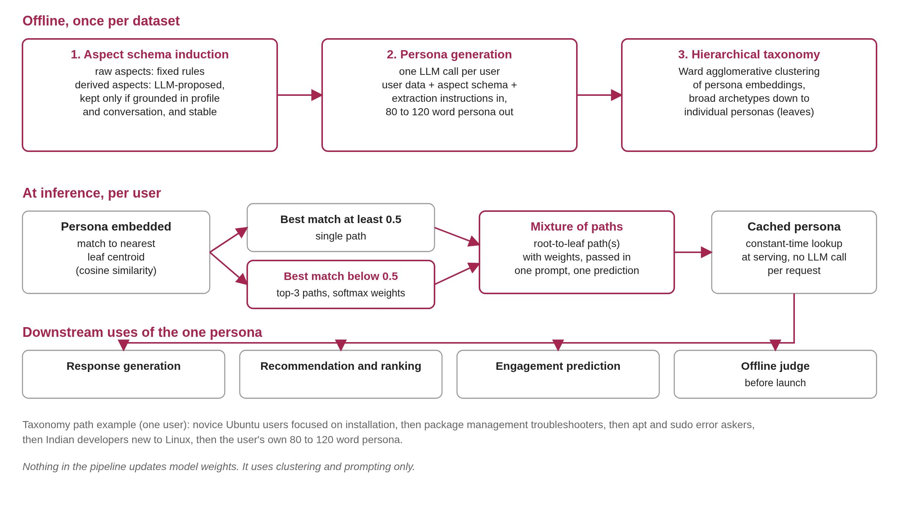
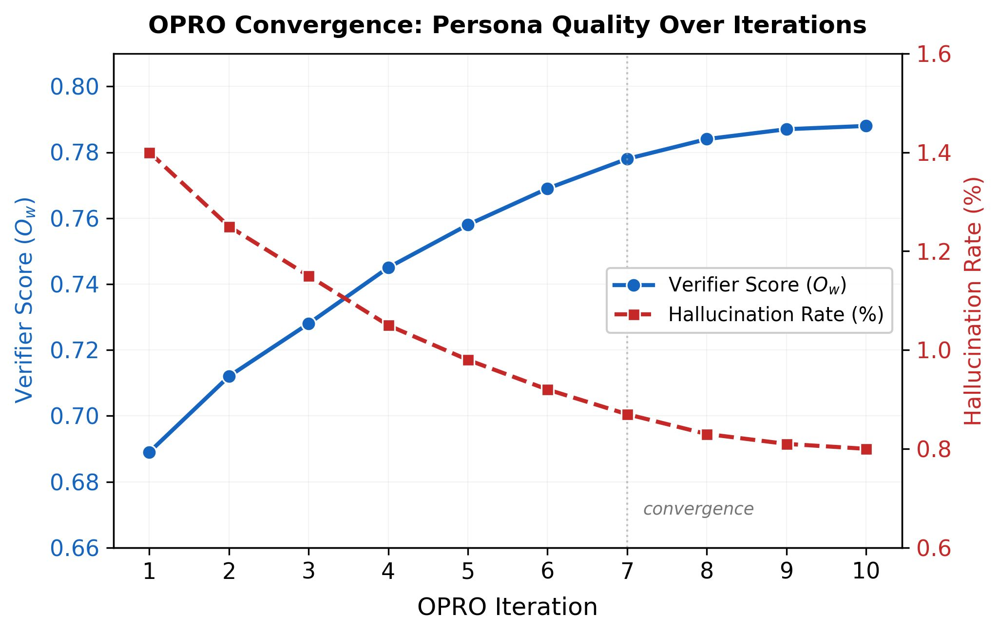

Is one profile ever enough to describe a person?
Context. This work was done during my time at Amazon, in the Central Machine Learning Team in Bangalore, working with Sivaramakrishnan Kaveri, Anshuman Mourya and Rajdeep Mukherjee, as part of my applied scientist internship, from January to June 2026.
Consider the last few items a person bought, watched or searched for. They rarely fit a single description. The same person may be a careful buyer of household goods, an impulsive buyer of gadgets and a highly selective reader of books. A summary such as "likes value, tech and books" is accurate, but it offers little guidance when a system must decide what to suggest next.
This gap was the starting point of my internship at Amazon, in the Central Machine Learning Team in Bangalore. The project I owned was ASPEX, short for aspect-grounded persona generation with a hierarchical taxonomy. This article describes the problem, the method, the evaluation and the results observed in production traffic.
The role of personas
Conversational assistants are now used for tasks ranging from shopping to healthcare, and they can do far more than any user will discover unaided. Discoverability therefore becomes the central difficulty: how does a person find the capability that fits their goal? A common answer is to suggest actions proactively, either at the start of a session, when there is little to go on, or as follow-ups while the conversation continues.
A good suggestion is personal. What to suggest, and whether a particular person will act on it, depends on that person's history and not only on overall popularity. Systems therefore increasingly build a persona for each user: a short natural-language profile of the user's traits, preferences and behavior, written from their interaction history. One persona can feed many tasks at once, such as generating responses, ranking candidate actions, predicting engagement, or serving as an offline judge that scores a recommendation strategy before it is shown to anyone. Because many components consume it, the quality of the persona bounds the quality of everything downstream. A faithful persona improves every prediction that uses it, and a flawed one degrades all of them together.
Limitations of existing persona generation
Three weaknesses recur in the way personas are usually produced.
- Ungrounded. A language model writing a persona can assert claims that were never checked against the user's data. A two-month-old account may be described as that of a seasoned expert, and the unsupported trait then propagates into every decision that uses the persona.
- Monolithic. The persona has one fixed format, either free text or a flat category label. Free text carries detail but is unstructured, so a downstream model must infer which sentences matter. A flat label is compact but discards the small differences among users in the same group.
- Hard-assigned. Each user is mapped to exactly one archetype, although real behavior is blended. Users in transition, for example from beginner to intermediate, do not belong cleanly to any single category.
The usual remedy for the last problem moves to the opposite extreme: maintaining several personas per user, or running several persona-conditioned model calls and aggregating them. This captures blended behavior, but it multiplies the cost of generating personas and of serving each request, which is difficult to justify at production scale. The field therefore faced a trade-off between personas that are inexpensive but too coarse and ensembles that are rich but costly. The objective of ASPEX was to obtain the richness of the latter at the cost of a single call per user.
Requirements for a persona
We framed the goal as a generator that takes a user's attributes and interaction history and writes a persona that improves many tasks at once, and not one task to which it was tuned. This implied four requirements.
- Grounding. Every claim in the persona should be supported by the user's own data.
- Granularity. No single fixed format suits every task, because tasks need signal at different resolutions. Recommending beginner-friendly content may require only a coarse, archetype-level view, whereas click prediction may require leaf-level detail.
- Ambiguity. Many users are not described well by any single archetype and require a distribution over profiles.
- A fixed budget. Because the method runs at scale, it must fit within a single model call per user, with no per-user training and no ensembles.
The ASPEX method
ASPEX uses no fine-tuning and updates no model weights. It relies only on clustering and prompting, and it proceeds in three stages.

Stage one: aspect schema induction. A schema of behavioral aspects is first induced directly from raw interaction data. An aspect is a dimension along which users differ, such as technical depth or persistence. Each aspect has a plain description, a set of possible values and an instruction that tells a language model how to read that value from a user's data, so the schema can be applied to new users immediately. Some aspects are raw and deterministic, computed by fixed rules, for example account age or answer-acceptance rate. They serve as factual anchors against hallucination. Others are derived, meaning higher-order patterns that a prompted model reads from the data.
To identify derived aspects, users are embedded and clustered with K-means, and a model is shown small representative samples from the clusters over several bootstrapped rounds. It proposes candidate aspects in each round, and near-duplicates are merged. A candidate is retained only if it passes two tests. It must be grounded across signals, meaning that it anchors in at least one profile attribute and at least one piece of conversation evidence. It must also be stable, meaning that it recurs across rounds and does not appear by chance. This step is run once per dataset and refreshed only occasionally, so its cost is shared across the whole population.
The details of this stage determine how trustworthy the schema is. Each user is embedded by combining two signals: a sentence encoder applied to the user's writing, and a standardized map of structured features, mixed with a weight of 0.5, which gave the best clustering. The embeddings are grouped into 30 clusters with K-means, a number selected by silhouette score over a range of 8 to 40. Each cluster contributes a typical member and two members near its boundary. Over ten bootstrapped rounds, a model sees a random subset of these representatives and proposes aspects, each written to a structured contract: a name, a type, a value space, a three to five step extraction recipe, evidence slots and a rationale for the aspect's usefulness. Proposals from different rounds are merged when they are very similar (cosine similarity of at least 0.78), and only aspects with a stability of at least 0.3 are kept. On AskUbuntu this produced five raw aspects, such as account age, reputation tier, question count and answer-acceptance rate, and five derived aspects, such as technical depth and engagement persistence. The grounding and stability tests apply only to derived aspects. Raw aspects come from fixed rules and are admitted directly.
| Aspect | Category |
|---|---|
| account_age | Raw |
| reputation_tier | Raw |
| primary_tags | Raw |
| total_questions | Raw |
| accept_rate | Raw |
| technical_depth | Derived |
| topic_breadth | Derived |
| question_quality | Derived |
| engagement_persistence | Derived |
| resolution_speed | Derived |
The table lists the ten aspects of the AskUbuntu schema, five raw and five derived.
Stage two: persona generation in one call. With the schema available, the persona for each user is generated in a single model call. The prompt contains the user's data, the aspect schema and the extraction instructions. The model determines the aspect values and writes the persona in the same pass, following a structured template: it starts from the deterministic facts, examines the derived patterns, cross-checks against direct conversation evidence and then writes a short paragraph of roughly 80 to 120 words. Every claim is intended to be anchored in something observable.
Stage three: hierarchical taxonomy. All personas are embedded and organized into a multi-level taxonomy by agglomerative clustering. The top level is a small set of broad archetypes, each deeper level refines the one above it, and the leaves are individual personas. Every node receives a description written from the personas beneath it. A user therefore maps to a path from broad archetype down to individual detail, for example from "novice Ubuntu users", to "package-management troubleshooters", to a particular kind of question asker with particular habits.
This matters because tasks need different resolutions. Recommending beginner-friendly content may need only the coarse level. Predicting a click may require distinguishing two novices who differ only in small habits, such as one who wants copy-and-paste fixes and another who wants conceptual explanations. The hierarchy exposes signal at every level so that each downstream task can use what it needs.
To make the difference among the three persona formats concrete, the following table describes the same user in each format, using the example from the paper:
| Format | The same AskUbuntu user |
|---|---|
| Free text | Novice Ubuntu user with a minimalist questioning style and terse posts. Narrow topic focus on package management and permissions. Moderate activity, 40% answer-acceptance rate, prefers copy-paste command solutions over conceptual explanations. |
| Flat category | C14: Early-stage Linux user exploring package management (confidence 0.72) |
| Hierarchical | Novice Ubuntu users, then package-management troubleshooters, then apt and sudo error askers with a narrow focus, then low accept rate and step-by-step preference, then the full persona |
Free text holds the most detail but leaves a downstream model to determine which phrases matter. The flat label is easy to use but loses the habits that separate this user from other novices. The hierarchical form retains both and allows a task to select the level it needs.
The taxonomy has five levels. The clustering tree is cut at five heights, each chosen to maximize a standard cluster-quality score with a minimum of ten members per cluster. The top level holds 5 to 20 broad archetypes with labels of five to nine words. The intermediate levels hold progressively more groups with longer descriptions, and the leaf is the individual persona itself, of 80 to 120 words. Description length grows with depth, so the top of the tree remains terse while the bottom carries the detail. On AskUbuntu, with 26,981 personas in the training split, the first four levels contained 6, 30, 100 and 300 nodes. One complete path from the paper, lightly condensed, is shown below:
| Level | Description at that level |
|---|---|
| 1 | Novice Ubuntu users focused on installation |
| 2 | Package management troubleshooters encountering basic system errors |
| 3 | Users encountering apt and sudo errors with narrow topic focus and low accept rates |
| 4 | Indian developers new to Linux asking about apt failures, GRUB and Python, who prefer step-by-step commands |
| 5 | The user's own 80 to 120 word persona: early-stage Ubuntu adoption, 15 questions across apt permissions, WiFi and Python installation, a 40% accept rate, and a preference for copy-paste solutions over conceptual explanations |
Soft assignment: the mixture of paths
The mixture of paths is the distinguishing element of the method. A new user is embedded and matched against the closest group in the taxonomy. If one match clearly stands out, with similarity above a threshold, the user takes that single path. However, a large share of users have no dominant match. These are users in transition or with shifting focus, whom a single archetype describes poorly.
For these users the top few paths are retained, and each is given a weight by a softmax over similarity, with a temperature that controls how strongly weight concentrates on the nearest path. In our configuration the threshold was 0.5, the temperature was 0.1 and the top three paths were kept. At inference time the downstream model reads these paths and weights inside one prompt and produces one prediction. There is no step in which per-path outputs are generated and averaged afterwards. In effect, the benefit of several personas is obtained from a single grounded persona at the cost of one call.
The sensitivity to the threshold shows what the mixture is doing. Raising the threshold sends more users down the multi-path route, and the gain over having no persona changes little:
| Threshold | Users on one path | Users on several paths | Average paths | Engagement judge gain over no persona |
|---|---|---|---|---|
| 0.3 | 82% | 18% | 1.18 | +41.8% |
| 0.4 | 72% | 28% | 1.28 | +43.3% |
| 0.5 | 65% | 35% | 1.35 | +44.8% |
| 0.6 | 52% | 48% | 1.48 | +44.0% |
| 0.7 | 38% | 62% | 1.62 | +42.5% |
At the selected setting, 35% of users on the proprietary data fell in the blended group, compared with 32% on AskUbuntu and 31% on Goodreads.
Experimental design
Careful evaluation was a priority, because personalization results are easy to inflate. We used one proprietary dataset from a conversational assistant platform and two public datasets, AskUbuntu (53,963 users) and Goodreads (11,143 users). Together they cover seven tasks that all depend on who the user is:
- on the proprietary data: click prediction for a single suggestion; an engagement judge that predicts whether the user clicks any of three surfaced suggestions; recommendation quality judged by human annotators; and a pairwise judge that predicts which of two suggestions the user clicks;
- on AskUbuntu: predicting whether an answer is accepted, and whether the asker later returns to comment on an unresolved thread;
- on Goodreads: predicting whether a user rates a held-out book at or above their own average.
The two public datasets required construction to expose labels that depend on the person. For AskUbuntu we kept users with at least two questions. For accepted-answer prediction, each question in the evaluation window with at least two answers yields a set of (persona, question, candidate answer) cases, labelled by which answer the asker accepted. For the comment task we considered only unresolved questions, for which no answer was ever accepted, and asked whether the asker later returned to comment. For Goodreads, each held-out review is labelled one if its rating is at or above that user's own average rating and zero otherwise. The same review text can therefore receive opposite labels for a strict rater and a lenient one, so the task cannot be solved without a persona that captures personal calibration. Positive-label base rates were 19.1% for accepted answers, 32.9% for comments and 52.6% for Goodreads.
The most strictly observed rule was temporal separation. Personas are built only from data before a cutoff, and tasks are scored on what happens afterwards. If a persona is allowed to see the future, the results appear strong but carry no meaning. Each task was also scored by one fixed base model shared across every persona method, so that the persona text was the only variable. We compared against no persona at all, a handcrafted-persona baseline and re-implementations of other published approaches, all performed in a single call per user so that the comparison is fair on compute. The schema and taxonomy were built on a training split of users and applied unchanged to evaluation users, who never influenced them. The generation prompt was tuned offline against a claim-verification score and not against any downstream label, so nothing was tuned to the answer.
Results
ASPEX performed best on all seven tasks and on every metric, and the gains were statistically significant. The margin over the strongest baseline was largest on the tasks where the outcome depends most on who is asking: roughly 11% higher auPRC on the engagement judge and about 9% higher accuracy on the pairwise preference judge, with smaller but consistent gains on recommendation. On the proprietary data, results are reported relative to the no-persona baseline because absolute scores are withheld. For example, the auPRC of the engagement judge increased by 44.8% over no persona with ASPEX, against 29.9% for the best baseline.
| Method | Engagement judge | Pairwise judge | AskUbuntu answer | Goodreads rating |
|---|---|---|---|---|
| No persona | - | - | .246 | .560 |
| Handcrafted | +6.7 | +9.7 | .286 | .586 |
| PersonaX-styled | +14.9 | +14.6 | .318 | .614 |
| PersonaCite-styled | +22.4 | +19.8 | .342 | .642 |
| PersonaCite-styled + mixture | +29.9 | +23.9 | .348 | .652 |
| ASPEX, no mixture | +35.1 | +27.6 | .350 | .648 |
| ASPEX | +44.8 | +34.7 | .360 | .664 |
The first two score columns are relative improvements over no persona, in percent (auPRC for the engagement judge, accuracy for the pairwise judge), because the absolute proprietary scores are withheld. The last two are absolute auPRC on the public datasets. Two further proprietary tasks follow the same pattern: click prediction improved by 15.8% against 7.6% for the best baseline, and recommendation relevance by 23.7% against 17.1%. The baselines are our own single-call re-implementations inspired by the cited methods and are not exact reproductions, so that the persona is the only element that differs.
Click prediction was the most difficult setting. The classes are heavily imbalanced, which makes the label hard to predict by any method, and ASPEX still improved on the best baseline. On the two public datasets the lead was about one auPRC point over the strongest baseline. It was largest on AskUbuntu answer acceptance, which depends heavily on the asker's expertise and history. On Goodreads the base rate is balanced, so auPRC and auROC are nearly identical.
Ablations
An ablation on the engagement judge identified which design choice matters most. The representation was the main factor. The mixture of paths outperformed hierarchical hard assignment by 3% relative auPRC, flat text personas by 8% and flat category labels by 18%. The gain was concentrated among about a third of users who have no dominant cluster, which is precisely the group that hard assignment serves poorly. That fraction was stable across datasets, and the mixture was robust to its threshold, shifting auPRC by only about 3 points.
Two further ablations are noted. First, the way the persona is generated matters independently. Giving the generator both domain context and the aspect schema produced the best quality score (0.788, with 0.8% hallucinated claims). Removing either reduced it: aspects alone gave 0.74 and domain context alone gave 0.70, so the two supply complementary signal.
Second, the verification step. The quality score comes from a two-stage check that is used only for tuning and evaluation and never when a persona is generated in production. In the first stage, a verifier sees only the raw user data, with the persona withheld, and reconstructs a ground-truth summary of the schema aspects, marking any it cannot support as not evidenced. In the second stage the persona is divided into atomic claims. Each claim is typed as extractive (readable from a single data field, such as "active for 6 months"), aggregative (a pattern over many data points, such as "minimalist communication style") or inferential (a step beyond the data, such as "may be exploring advanced features"). Each claim is then judged against the reconstruction as supported, partially supported, not evidenced, contradicted or hallucinated. Claims are weighted by type with a graduated scheme of 2, 1 and 0.5. This score was used to tune the generation prompt with a prompt-optimization method, and the optimizer never saw a downstream label. The prompt tuning added about 3.5% relative auPRC on top of the hierarchy, and the held-out quality score and the held-out engagement judge result rose together along the optimization trajectory (correlation 0.94), indicating that a task-agnostic signal was sufficient. Removing the typed verification raised hallucination from 0.8% to 1.4% and cost about 6% relative auPRC, and using uniform weights in place of the graduated ones cost about 3%. Contradicted factual claims mislead the downstream model far more than speculative ones.

The paper also compares prompt optimizers on the proprietary data. Each is scored by its improvement in the verifier score over the base prompt, and by hallucination rate. The optimizer used here, OPRO, gave the largest gain and the lowest hallucination rate, so it was adopted.
| Optimizer | Gain in verifier score over base prompt | Hallucination (%) |
|---|---|---|
| Base prompt | - | 1.4 |
| SCULPT | +0.002 | 2.1 |
| GEPA | +0.005 | 2.2 |
| TextGrad | +0.010 | 1.3 |
| ProTeGi | +0.022 | 0.6 |
| SPO | +0.046 | 1.0 |
| OPRO | +0.099 | 0.8 |
Relation to other work
The paper groups earlier persona work into several categories. Early methods used hand-made profiles or templates, and hard assignment maps each user to one archetype. Other methods keep several personas per user or aggregate an ensemble of persona-conditioned calls at inference. Some work grounds claims through retrieval or builds datasets from real user actions. Both extremes have limitations: hard assignment discards blended behavior, and ensembles cost more to generate and maintain and can condition inconsistently. ASPEX takes a middle path, using a single grounded persona with a mixture over its hierarchy. The paper also notes concurrent work that organizes users hierarchically along a different axis, for example sociological levels or a memory hierarchy within one user. On the judge side, language models are widely used as evaluators but show position, length and self-preference biases and are unreliable as personalized judges when the persona is simplistic. ASPEX addresses that gap by grounding and verifying the persona that conditions the judge. To the authors' knowledge, it is the first method to combine aspect-grounded generation with a hierarchical mixture of paths while staying within one call per user.
Cost
Cost was a design constraint from the outset. Persona generation requires one model call per user, offline, and serving is a constant-time lookup from cached personas with no model call per request. A new user is embedded once and attached to the nearest taxonomy path. Ensemble methods require k calls per request, whereas ASPEX matches their coverage of blended behavior without its cost growing with k. The only premium is offline: agglomerative clustering grows roughly quadratically, so for very large populations the taxonomy is built on a representative sample and the remaining users are attached by nearest centroid.
Production deployment
ASPEX was deployed in two settings. The first is a pre-launch judge. A persona-conditioned judge scores candidate suggestion strategies offline before any live experiment, so that teams can screen variants and reserve costly live traffic for the most promising ones. Across two production A/B experiments, its predicted treatment effect was five times closer to the observed outcome than that of a user-agnostic judge, and it recovered the correct sign and ordering. The second setting is a personalized recommender that reuses the same cached persona online. A live A/B experiment showed a 10% relative engagement gain over control. The second result is the more reassuring, because it shows that the method improves the live task and not only an offline metric.
Limitations
The method depends on language model API calls. At the scale of AskUbuntu this amounts to about 54 thousand calls, plus roughly 900 for prompt tuning, which is tractable, but populations beyond about half a million users with frequent refreshes would require batching or distillation. The threshold and the number of paths were tuned on validation data and may need adjustment for each domain, although results remained within about a point across a reasonable range. A minimum of three interactions was required to build reliable labels, which excluded around 12% of active users from evaluation, and personas for very sparse users are weaker. The temporal split also assumes that behavior is fairly stable, so users undergoing a major change may be described inadequately.
Status
The paper is linked in the title of this article and has been submitted to the EACL Industry Track 2027. The project also took second place in the internal hackathon for applied scientist interns at Amazon. The production results are the part most specific to our setting, while the representation result, that a weighted mixture of paths outperforms a single forced archetype, is the part most likely to carry over to other products.
Conclusions
A better model of a person is often several smaller models, each accurate about what it covers. A single profile is easy to write and easy to read, but it conceals the differences that matter. Allowing a user to be several things at once, grounding every claim in evidence and being careful about when measurements are taken produced a more accurate result, at no additional cost to run.
Submitted to EACL Industry Track 2027.